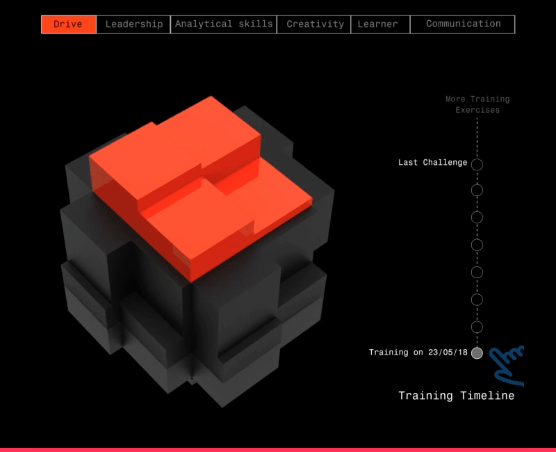

April 12-14, 2018/ Berlin, Germany
TYPO LABS,
Typography in Virtual space, a project in collaboration with Creative Director Ksenya Samarskaya ( Type consultant at Apple)
Project presentation link

Dec 12-Mar 29, 2017/ Fort Kochi, India
Biennale
The Project was initiated by Urban Citylab Bangalore, India it was the first part of an ongoing research project on the sensory experience of traversing Bangalore’s multi-layered, hyper connected reality.
Read more about my contribution in the project
I am a UX Designer
Currently working on a UCaaS platform for UnifyMe. Which includes a web based application and user app. Get in touch with me to know more about this project.
-

-

-

-
 TMB : Travel app
TMB : Travel app
UX/UI Design
Apart from working on applications for mobile and desktop, I also tinker with projects that fuel my creativity like -painting with code, Interactive products etc.
Visit my Behance profile to dig more into who I am.
Documentation of my Ideas
-
Having a background in Architecture, this article studies type specimen -Bauhaus from a perpective of construction, form and function...
-
Am I too selfish to call myself a “Human” centered designer and not a “ Humanity” centered designer?...
-
How to design your content for scanning and not reading : 5 powerful ideas for effective story telling....
About Me
Download Resume
I am passionate about architecting digital spaces; I constantly experiment with projects of varying scales ranging from an app to a product.
In the past I have collaborated with artists on speculative installations, Typography for Virtual spaces to name a few.
My prior background in Architecture has kept me inquisitive regarding how people think,feel and react in the digital realm.
What others have to say...
"
Juneza has the right attitude, and the right brain for the job. Her key strength appears to be her determination, her ability to work well with others, and her desire to get to the bottom of things and do it correctly. "
— Irene Pereyra
(Creative Director and Co-Founder at Anton & Irene Studio)